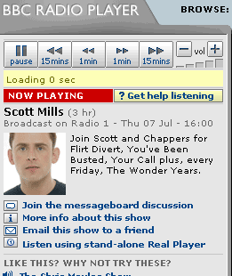
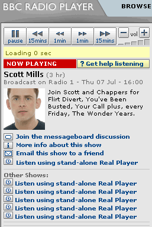

Install (FFox 1.0.x) :Right Click here and select "Install User Script"
Install (FFox 1.5RC1 + GM 0.6.3 Only) : Right Click here and choose install user script (install over previous copies)
The aim of this script is to allow a user to choose other shows by the same DJ from the same week.
This functionality already exists on the right hand pane so you can ignore it if you wish. I just added this to see if I could code it, and
to give quicker access
It searches for the ".rpm" file for each day of the week based on the existing filename. It uses "GM_xmlhttpRequest" to read that file to get the actual ".ra" source file and returns a link to that show.
Once the file is read a new div is added below the current links. As it has to read each file for each of the 7 days, it takes a few seconds to appear and may never appear if the file doen't exist (see Limitations).
GreaseMonkey is an extension for Mozilla Firefox.
I Found Dive Into Greasemonkey very useful in learning how to make Greasemonkey scripts.
Before & After


Any Comments then email me @ 
Install (FFox 1.0.x) :Right Click here and select "Install User Script"
Install (FFox 1.5RC1 + GM 0.6.3 Only) : Right Click here and choose install user script (install over previous copies)
Version 0.12 - For FireFox 1.5RC1 and Greasemonkey 0.6.4 only (may work on 1.0.x)
----------------------------
4 November 2005 PM
-----------------------------
Fix for new firefox + greasemonkey, install older version on Firefox 1.0.x
-----------------------------
Version 0.11
----------------------------
22nd July 2005
-----------------------------
Pauses embedded player when an external link is clicked
-----------------------------
Version 0.1
----------------------------
8th July 2005
-----------------------------
Initial release